Common Problems
Metrics Monitoring
Scaling Writes
Scaling Reads
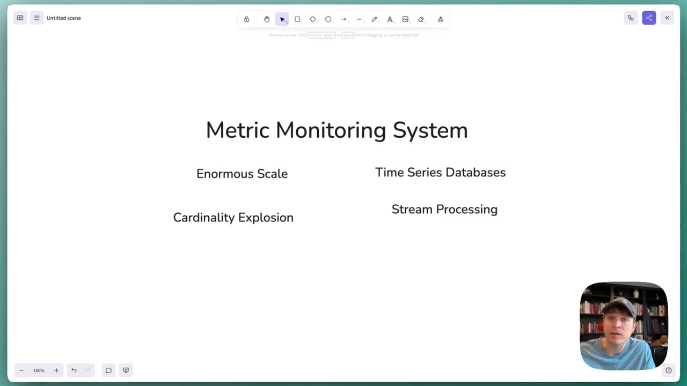
Hey, folks. In this video, we're gonna cover the design of a
0:00
/
1:10:35
Understanding the Problem
📊 What is a Metrics Monitoring Platform?
A metrics monitoring platform collects performance data (CPU, memory, throughput, latency) from servers and services, stores it as time-series data, visualizes it on dashboards, and triggers alerts when thresholds are breached. Think Datadog, Prometheus/Grafana, or AWS CloudWatch. This is infrastructure that engineers rely on to understand system health and respond to incidents.
Functional Requirements
We'll start our discussion by trying to tease out from our interviewer what the system needs to be able to do. Even though a metrics monitoring system is simple at face-value (collect metrics, store them, query them, etc.) there's a lot of potential complexity here so we want to narrow things down.
Core Requirements
- The platform should be able to ingest metrics (CPU, memory, latency, custom counters) from services
- Users should be able to query and visualize metrics on dashboards with filters, aggregations, and time ranges
- Users should be able to define alert rules with thresholds over time windows (e.g., "alert if p99 latency > 500ms for 5 minutes")
- Users should receive notifications when alerts fire (email, Slack, PagerDuty)
Below the line (out of scope):
- Log aggregation and full-text search (separate concern)
- Distributed tracing (spans, traces)
- Anomaly detection via ML

Non-Functional Requirements
Metrics monitoring systems can range from a single team's services to a fleet of hundreds of thousands of servers. Getting a sense of the scale of the system is important because it will influence a bunch of the decisions we need to make.
We might ask our interviewer or they might tell us "we need to design for monitoring 500k servers". That's a big fleet. If each server emits 100 metric data points every 10 seconds, that's 5 million metrics per second at peak. Each data point is small (timestamp, value, labels) at roughly 100-200 bytes, but at that volume we're looking at 1GB per second of raw ingestion. That's the crux of the problem.
Core Requirements
- The system should scale to ingest 5M metrics per second from 500k servers
- Dashboard queries should return within seconds, even for queries spanning days or weeks
- Alerts should evaluate with low latency (< 1 minute from metric emission to alert firing)
- The system should be highly available. We can tolerate eventual consistency for dashboards, but alert evaluation should be reliable.
- The system should handle late or out-of-order data gracefully (network delays are common)
Below the line (out of scope):
- Multi-region replication (would add complexity)
- Strong consistency guarantees
Here's how your requirements section might look on your whiteboard:
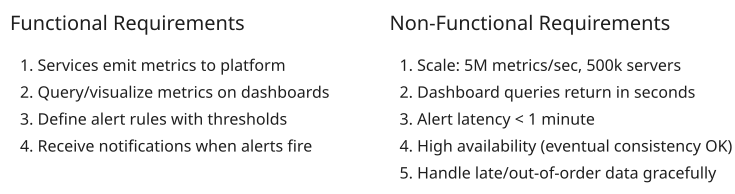
Requirements
The requirement for alerts to fire in under a minute might seem slow to some readers. "Wouldn't we want to fire as soon as the event happens?" Yes and no. In most production systems, it's difficult to see an event until you've accumulated enough data. Oftentimes alerts are (sensibly) set on moving averages or trends over time.
When you do want to fire an alert as soon as possible, it often is constructed in a very particular way. Amazon detects order drops (their most important event!) by looking for breaches of the number of milliseconds since their last order. Since they have so many orders, this number is very stable and allows them to fire almost instantaneously when something happens.
Designing metrics like this is an art, but rarely the focus for an interview like this! While there may be interviewers who are insistent and want to build a streaming event system, that's not where we'll focus here.
The Set Up
Planning the Approach
This problem sits at the intersection of data ingestion, time-series storage, real-time stream processing, and analytics queries. We'll tackle it by building up the core data flow: ingest, store, query, then alert. Since we have up to 1 min to handle alerts, we'll build them on top of the query functionality we already need to build rather than as a separate system.
Using the query path for our alerts is both a practical shortcut for an interview with limited time as well as a strong approach used by many real production systems.
We'll start simple, identify bottlenecks, and systematically address them.
Defining the Core Entities
With our plan in place, it helps for us to align with our interviewer on some core entities or "nouns" for the problem. It's not uncommon to be using different language for the same thing and this step avoids any confusion. It's also a place for you to start wrapping your head around what's involved in the problem.
The important piece for us to explore here is the relationship between metrics, labels, and series. A metric is a named measurement like cpu_usage. But rarely do we want to look at all cuts of the metric at once, oftentimes we want to be able to slice by user-defined labels.
These labels are key-value pairs you attach to that metric to identify where it came from, so things like host="server-1" or region="us-east". A series is a unique combination of metric name + labels tracked over time. So if you have 500k servers each reporting cpu_usage, that's 500k separate series. Add a core label and suddenly you're looking at millions. This "series explosion" is the central scaling challenge of the whole system.
Note that adding new labels doesn't always mean new series. If I have 500k servers, I'll have 500k series if I include host as a label. But if I add region as a label, I won't have any additional series unless there are servers in multiple regions. This is because we only care about unique combinations of metric name + labels, I may have server-1 in us-east, but I won't have a label or series for server-1 in us-west.
I also need entities for the alert rules and dashboards my users will be using to monitor the system. While we won't go into detail about the dashboard creation in this design, it's worth noting because it has an impact on the number of read queries we might expect. So here's our entities:
- Label: A key-value pair attached to a metric that lets you slice and filter. For example, host="server-1" or region="us-east".
- Metric: A named measurement with labels and a value at a point in time. Example: cpu_usage{host="server-1", region="us-east"} = 0.75.
- Series: The full sequence of (timestamp, value) pairs for one specific metric + label combination. So cpu_usage{host="server-1"} over time is one series, and cpu_usage{host="server-2"} is a different series.
- Alert Rule: A condition that triggers notifications when violated. It combines a metric query, a threshold, and a duration. For example, "average CPU in us-east above 90% for 5 minutes."
- Dashboard: A collection of panels, each displaying a query result as a chart or table.
On the whiteboard, I'm just going to list these out because I'll be narrating the discussion with my interviewer:
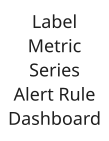
Core Entities
The difficult part of a metrics monitoring system is managing series at scale. Most systems will specifically attempt to limit the growth of the number of series over time (a problem often referred to as cardinality explosion). We'll address this in our deep dives.
Data Flow
Before diving into the technical design, let's trace how data moves through our system end-to-end. This helps us align with our interviewer on the core flow and spot potential bottlenecks early.
- Services generate metric data points (CPU, memory, latency, etc.) and send them to our platform
- The platform ingests, validates, and stores metrics as time-series data
- Users query stored metrics through dashboards, filtering and aggregating across time ranges
- Alert rules are periodically evaluated against the stored metrics
- When an alert condition is breached, a notification is sent to the configured channels (Slack, PagerDuty, email)
Pretty straightforward pipeline. The interesting part is that steps 1-2 are write-heavy and continuous (5M metrics/second), while step 3 is read-heavy and bursty (engineers debugging incidents). Steps 4-5 need to be reliable above all else. These different characteristics will drive a lot of our design decisions.
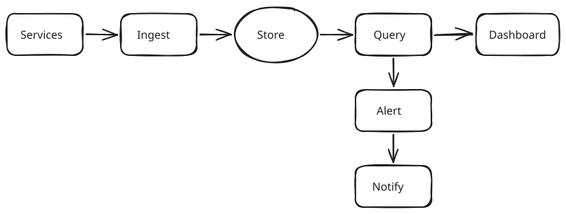
Data Flow
API or System Interface
Now that we've got a general idea of the shape of the problem, let's define an API for our system. This will help us structure the rest of our design. If we've done our job well, our design will be a direct implementation of the API.
I'm going to use JSON for the API because it's easy to write, but given the scale of this particular problem you'd almost definitely be using protobufs or a similar binary format for the wire protocol. I'll note this to the interviewer and most will know exactly what I'm talking about!
First, we need a way to ingest metrics. This is a high volume operation, typically batched, so we'll use a POST endpoint.
POST /metrics/ingest
{
"metrics": [
{ "name": "cpu_usage", "labels": {"host": "server-1"}, "value": 0.75, "timestamp": 1640000000 },
...
]
}Next, we need a way to query metrics. This is a read-heavy operation where we'll specify some DSL to describe the data we want to collect. PromQL (Prometheus Query Language) is a great example of a DSL for querying time-series data, so we'll model after this.
GET /metrics/query?query=avg(cpu_usage{region="us-east"})&start=A&end=B&step=60 -> { "timestamps": [...], "values": [...] }Finally, we need a way to define alert rules. These won't happen very often, our rules aren't changing a lot but they are being evaluated a ton.
POST /alerts/rules
{
"name": "High CPU Alert",
"query": "avg(cpu_usage{region='us-east'}) > 0.9",
"for": "5m",
"notifications": ["slack:#oncall", "pagerduty:team-infra"]
}Great, let's see if we can implement these.
High-Level Design
1) The platform can ingest metrics from services
We'll start our high-level design with the ingestion path: how do metrics get from the servers producing them to storage where we can query and alert. We need an ingestion path that can handle 5M metrics/second without becoming a bottleneck. Yikes.
The simplest approach is having servers POST metrics directly to an ingestion service. The ingestion service validates the data and writes it to storage.
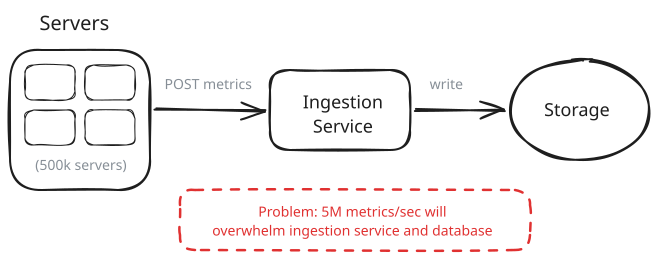
Basic Ingestion
This works for small scale, but at 5M metrics/second, we'll quickly overwhelm our ingestion service and database. We need a way to prevent 5M metrics/second from becoming 5M requests per second to our service.
Approach
The natural first instinct: just add more ingestion service instances behind a load balancer. If one server can handle 100k writes/second, spin up 50 of them. Auto-scaling policies can add capacity during spikes.
Challenges
This helps with the ingestion service itself, but it doesn't solve the downstream problem. All 50 instances are still writing directly to the database, which now faces 5M writes/second from 50 different sources. You've moved the bottleneck, not removed it. You also have no buffer if the database slows down or goes offline briefly so incoming metrics are just dropped. There's no backpressure, no durability, and no way to replay data after a failure.
Approach
Introduce Kafka between the ingestion service and storage. Servers send metrics to the ingestion service, which validates and publishes them to a Kafka topic partitioned by metric name (or a hash of metric name + labels). This gives us:
- Backpressure handling: Kafka absorbs spikes while consumers process at their own pace
- Durability: Metrics are persisted in Kafka until consumed
- Parallelism: Multiple consumer partitions process data in parallel
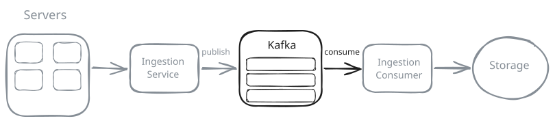
Message Queue
Challenges
Kafka adds operational complexity and latency (typically 10-50ms). We also need to handle consumer failures and ensure at-least-once delivery semantics. But for our scale, this decoupling is essential.
Approach
Instead of servers pushing directly to a central ingestion service, we run a small background process on each server (often called a "collector" or "agent" in monitoring systems) that gathers metrics locally. Real-world examples include the Datadog Agent and various OTEL collectors. This collector:
- Collects metrics locally at high frequency
- Buffers and batches metrics locally
- Periodically flushes batches via Kafka to our ingestion service
This shifts work to the edge, reducing central ingestion load. Instead of 5M requests per second hitting our ingestion service, we're now only sending 50k requests per second. Agents can also handle local aggregation (e.g., computing percentiles locally before shipping).
Finally, Kafka enables us to buffer against potential spikes or issues downstream. If our ingestion consumer is down or falls behind, we're able to catch up via Kafka's retention.
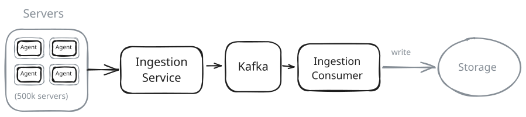
Agent Buffering
Challenges
Agents add deployment complexity. You need to manage agent versions, configs, and failures across 500k servers. But this is the standard pattern used by Datadog, Prometheus, and other production systems because it scales better and provides better reliability.
By taking advantage of both agents/collectors running on the servers (to spread the problem) and Kafka (to buffer against spikes or issues downstream), we've got the beginnings of an ingestion path. Let's keep going.
Pattern: Scaling Writes
Ingesting 5M metrics/second is a textbook scaling writes challenge. Our solution here hits three of the four major strategies: choosing a write-optimized database (time-series DB), buffering bursts with a queue (Kafka), and batching at the edge (agents aggregating locally before shipping). If the interviewer pushes on ingestion scale, this pattern gives you the full toolkit.
While the queue is helpful for us, it can also be a curse. If our system is down for 5 minutes, we now have 5 minutes of metrics we need to "catch-up" on when we come back online before we're operating at real-time data. This either means we need to be highly scaled (if we are at 50% capacity during normal times, it will take us 5 minutes to catch up; but if we're at 75% capacity, it will take us 15 minutes to catch up, etc.) or we need to make some tough decisions to cut our losses and lose data.
For most monitoring systems it's better to lose some data than to persistently be running behind. This makes for some interesting trade-off discussions with your interviewer.
2) Users can query and visualize metrics on dashboards
We've got metrics flowing from agents through Kafka, but we black-boxed where they actually land. Now we need to address storage, because without the right storage layer, everything else falls apart.
Dashboard queries are demanding. An engineer debugging an incident might ask: "Show me the p99 latency for all API endpoints in us-east over the last 6 hours, broken down by endpoint." That's potentially millions of data points that need to be scanned, filtered, aggregated, and returned in under a second.
The obvious first instinct is to use what we know: throw it in a relational database like Postgres. We can store each metric as a row, index by timestamp and metric name, and write SQL queries. This actually works fine for small-scale monitoring (a few hundred servers, weeks of retention) but breaks down quickly.
Approach
Store each metric data point as a row in Postgres:
| id | metric_name | labels | value | timestamp |Translate incoming queries to SQL:
SELECT time_bucket('1 minute', "timestamp") as bucket, AVG("value")
FROM metrics
WHERE "metric_name" = 'cpu_usage' AND "labels" @> '{"region": "us-east"}'
AND "timestamp" BETWEEN '2024-01-01' AND '2024-01-02'
GROUP BY bucket;Challenges
At 5M writes/second, Postgres can't keep up. Sharding breaks cross-shard queries. Read performance degrades as data grows - queries that worked fine with a week of data become unusable with a month. Retention management (DELETEs) causes write amplification and vacuum pressure.
Approach
Use a database designed for this workload: InfluxDB, TimescaleDB, or VictoriaMetrics. These databases are built around the unique characteristics of time-series data:
- Append-only writes: Data is written in time order and (almost) never updated. This allows LSM-tree or append-only storage engines that achieve high write throughput.
- Time-based partitioning: Data is naturally chunked by time (hourly, daily). Queries for "last 6 hours" only touch recent chunks. Old chunks can be dropped without affecting active data.
- Columnar compression: Timestamps and values compress extremely well when stored together. A day of CPU metrics for one host might compress from 100KB to 5KB.
- Built-in rollups: The database can automatically compute 1-minute, 1-hour, and 1-day aggregates, storing them separately for fast long-range queries.
We'll partition by both time and metric series (sharding by hash of metric name + labels). Raw 10-second data is kept for 15 days, 1-minute rollups for 90 days, 1-hour rollups for a year.
Challenges
Time-series databases struggle with high-cardinality data - millions of unique label combinations create millions of series, and each series has overhead. We'll need cardinality controls to prevent runaway growth.
We'll go with a dedicated time series database here. With storage sorted, we need a query service to sit in front of it. This service accepts queries in our PromQL-like DSL, translates them to storage queries, and returns results formatted for dashboards.
Why a separate service? The read path has completely different characteristics than the write path. Dashboard queries are sporadic, user-driven, and can be expensive (scanning weeks of data). Writes are constant, predictable, and must never be dropped. By separating them, we can scale and tune each independently. We can also add a caching layer to the query service without complicating the write path.
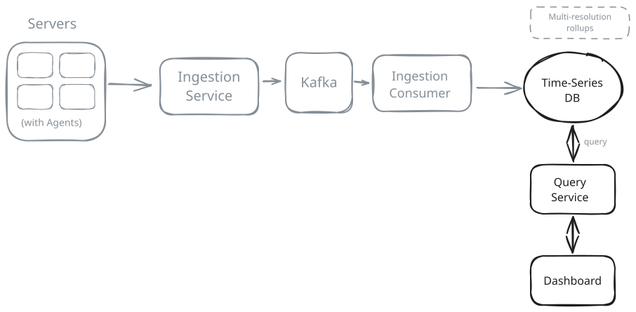
Storage Architecture
This is one of those rare times where a time-series database is the right tool for the job. We aren't using them in most other problems because they're specialized - great for metrics, but limited for general-purpose data. Just because you have timestamped data doesn't mean you need a time-series database. But for a metrics platform at scale, the fit is obvious.
For a deeper understanding of how time-series databases work under the hood (LSM trees, compression, retention), see our Time Series Databases deep dive.
3) Users can define alert rules with thresholds
Next, we need to give our users a way to define alert rules and have them fire when conditions are met. It's at this point that a lot of candidates start to spin up Flink or Spark to evaluate rules against streaming data, but this is overkill for now. Remember that our solution requires alerts to fire within 1 minute, we don't (yet) have a requirement for real-time alerting. So let's go with a simple polling approach!
Users will register alert rules via an alerting API. This is written to a database (let's use Postgres!). Our alert evaluator service will periodically grab these rules and fire off a query to our time series database to evaluate them. When alerts are triggered, we'll emit an event that the alarm is breached.
This polling approach is exactly how Prometheus Alertmanager works. Alert rules are evaluated on a fixed interval (default 1 minute), querying the same storage that serves dashboards. It's battle-tested and works well for most organizations. The simplicity of "alerts are just scheduled queries" makes the system easier to reason about and debug.
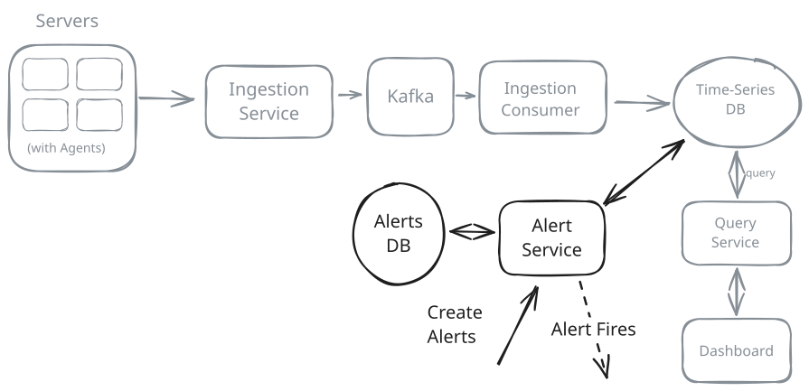
Alerting Architecture
This gets us configurable alerts that fire, but we don't yet get those alerts to the right people. Let's handle that last!
4) Users receive notifications when alerts fire
It's tempting to have our alert service call the Slack API or PagerDuty directly when it detects a violation, but this is risky! Remember that the whole point of our system is be able to get these alerts in a timely manner. If the slack API is fickle and we drop our alert because of it, we've failed.
We also need to be careful about how we handle notifications. If 100 servers in the same cluster all breach a CPU threshold at the same time, we don't want to send 100 separate PagerDuty pages. The on-call engineer doesn't need their phone buzzing 100 times for what is clearly one incident.
Instead, we'll introduce a Notification Service that sits between our alert service and our notification channels. It handles the messy real-world stuff: grouping, deduplication, silencing, and escalation.
Take deduplication as an example. Our alert evaluator runs every minute, and if CPU is still above 90%, it fires the same alert again. Without dedup, the on-call engineer gets paged every single minute for what is clearly the same ongoing incident. The Notification Service solves this by tracking alert state so each alert is either "firing" or "resolved." When an alert event comes in, the service checks: is this alert already firing? If so, skip the notification. Only notify on state transitions: when an alert first fires, and when it resolves. That way, one page goes out when the problem starts, one when it ends.
Grouping works similarly. The service collects alerts within a short time window (say 30 seconds), groups them by labels like cluster or service, and sends one notification per group instead of one per server. Silencing lets users mute specific alerts during maintenance, and escalation re-notifies through a different channel if nobody acknowledges within a configured time.
If you've used Prometheus, this is exactly what Alertmanager does (it's literally called that). The separation between "evaluating alert conditions" (Prometheus/Flink) and "managing notifications" (Alertmanager) is a well-established pattern, and for good reason. These are fundamentally different problems with different scaling and reliability characteristics.
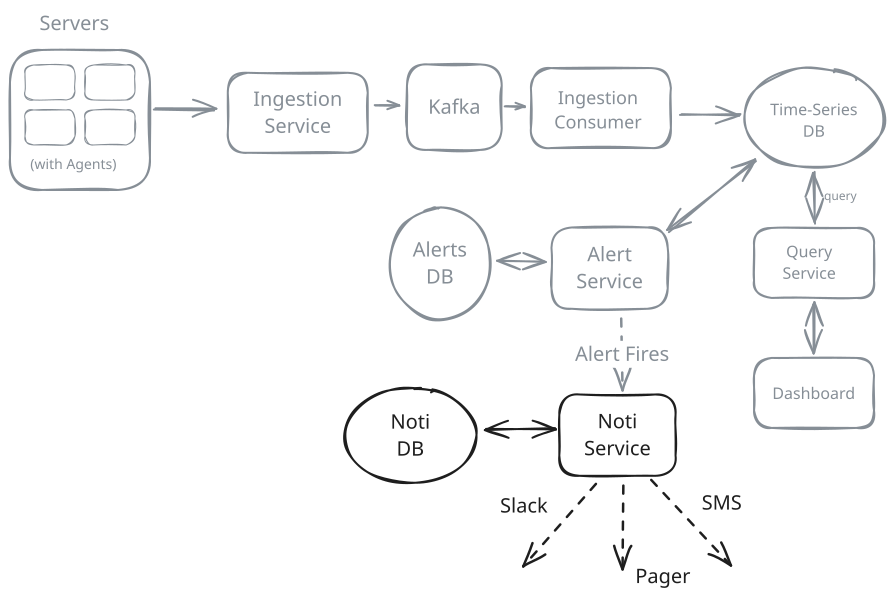
Notifications Architecture
And with that we have a basic solution which satisfies our functional requirements:
- The platform can ingest metrics from 500k servers at 5M metrics/second
- We can query and visualize metrics on dashboards
- We can define alert rules and have them fire when conditions are met
- We can receive notifications when alerts fire
Let's get into some potential deep dives that interviewers might ask.
Potential Deep Dives
1) How do we serve low-latency dashboard queries over weeks of data?
Dashboard queries are read-heavy and can span large time ranges. A query like "show me CPU usage for all pods in production over the last 30 days" could touch billions of data points.
Pattern: Scaling Reads
Dashboard queries showcase scaling reads challenges: heavy aggregations, time-range scans, and the need for sub-second responses to keep engineers productive.
Your instinct here should go to (a) caching, and (b) pre-computation. Let's talk about both.
Approach
Store all metrics at full resolution (10-second intervals). Query the database directly for each dashboard panel. A typical dashboard query might look like: "show me average CPU for all pods in production over the last 30 days."
Challenges
Walk through the math on this one. At 10-second intervals, 30 days is 259,200 data points per series. If you have 1,000 pods in production, that's 259 million rows the database needs to scan, filter, and aggregate. Each row is ~100 bytes, so you're reading about 25GB of data for a single dashboard panel.
Even with good indexes, this is brutal. The database has to scan all those rows sequentially, compute the average for each time bucket, and return the result. You're looking at response times measured in minutes, not seconds. And that's just one panel. A typical dashboard has 6-10 panels, each firing its own query. Engineers debugging an incident aren't going to wait around for that.
Approach
Another option is for us to store data at multiple resolutions (time granularities, meaning how much time each data point covers):
- Raw: 10-second intervals, kept for 2 days
- 1-minute rollups: kept for 2 weeks
- 1-hour rollups: kept for 90 days
- 1-day rollups: kept for 2 years
When a query arrives, the query engine selects the appropriate resolution based on the time range and requested granularity. A 30-day query uses hourly rollups (720 points per series), not raw data.
Most time-series databases will support rollups out of the box. If not, we'll need a background process to periodically compute them. In either case, our query service will need to be able to handle queries at different resolutions (and that cross resolution thresholds).
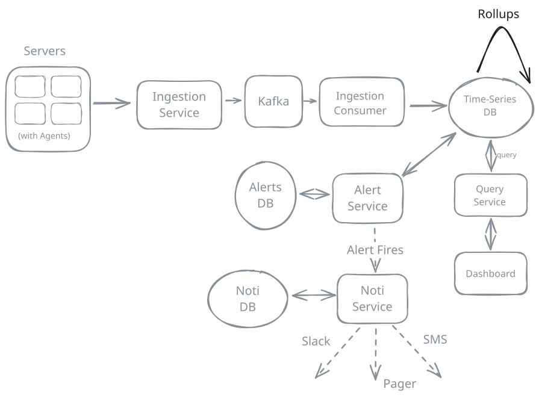
Pre-Computed Rollups
Challenges
Rollups are lossy. You can't query p99 latency from pre-aggregated averages and you won't be able to recover what happened over that 10s interval. For percentile metrics, you need to store histograms or sketches at each rollup level.
Engineers responsible for monitoring will need to be looking at the query history from users to determine which rollups are going to be most valuable.
Approach
The best approach takes advantage of the fact that most queries are covering the same data. Like the sliding window problem, queries that are separated by 10s are covering almost completely overlapping data. The only difference is the last 10s.
To take advantage of this, we add a caching layer (Redis) in front of the time-series database:
-
Query splitting: Break a 30-day query into chunks. Recent data (last 2 hours) queries the database directly for freshness. Historical data queries the cache first.
-
Precomputation: Popular dashboard queries are identified and precomputed on a schedule. Results are cached with TTLs aligned to data freshness requirements.
-
Result caching: Query results are cached with keys based on the query + time range. Subsequent identical queries hit the cache.
For dashboards that don't require real-time data (which is most of them), we can serve entirely from cache with sub-100ms latency.
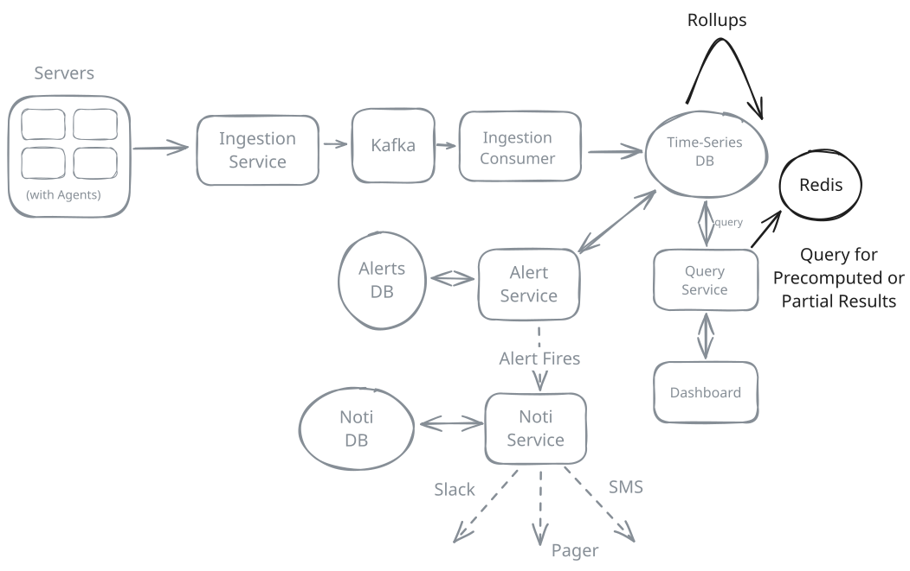
Caching Layer + Query Splitting
Challenges
Cache invalidation is tricky. Data backfills or corrections need to invalidate affected cache entries. Cache size needs monitoring to prevent memory exhaustion.
2) How do we reduce alert latency below 1 minute?
Our polling-based Alert Evaluator runs every minute, which gives us sub-minute latency for most alerts. But some organizations need faster detection, especially for critical services where every second of downtime costs money.
The bottleneck with polling is that we're querying the database on a schedule, not reacting to data as it arrives. If a threshold is breached 1 second after the last evaluation, we won't notice until the next evaluation cycle - up to 59 seconds later.
Approach
We don't necessarily have to be too clever here. We can simply run the Alert Evaluator more frequently - every 15 or 30 seconds instead of every minute. For 10,000 rules at 15-second intervals, that's ~670 queries/second.
Challenges
This adds significant load to the time-series database. At some point, alert queries start competing with dashboard queries and ingestion writes. And you're still fundamentally limited by the evaluation interval - 15-second polling means up to 14 seconds of latency.
Approach
As an alternative, we can use a stream processing framework like Flink to evaluate alerts against the live data stream. Since metrics already flow through Kafka, we add Flink as a second consumer:
- Flink reads metrics from Kafka (same topic our ingestion consumers read from)
- For each metric series, Flink maintains a windowed state (e.g., a rolling 5-minute buffer of values)
- Alert rules are compiled into Flink operators that continuously evaluate conditions against those windows
- When a threshold is violated for the configured duration, Flink emits an alert event
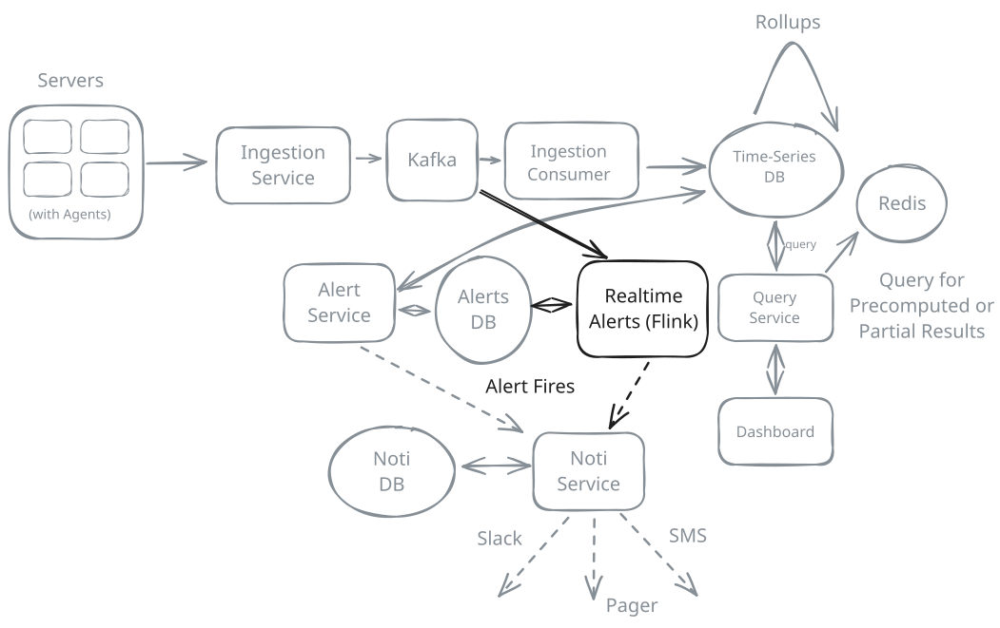
Alert Evaluation with Flink
In this solution, alert evaluation happens as data arrives, not on a polling schedule. There's no database query at all - Flink evaluates against its in-memory window state. Latency drops from "up to 60 seconds" to "within seconds of the metric arriving." The existing polling-based alert evaluator can still handle non-critical alerts while Flink handles the time-sensitive ones.
Challenges
Flink adds operational complexity. Alert rules need to be translated into streaming operators, and when users update rules, we need to handle that gracefully without losing state. Checkpointing is critical so we don't lose track of in-progress alert evaluations if a Flink node fails.
For most organizations, polling every 30-60 seconds is sufficient. Stream-based alerting is worth the complexity only if the interviewer is specifically asking (or hinting) at it. Even in systems where this is a requirement, it's likely that alerts will be split between real-time and polling, with the vast majority falling into the latter bucket since having a real-time system looking at daily-grained metrics is overkill.
3) How do we ensure high availability during spikes and failures?
If the monitoring system goes down during an incident, you're blind at the exact moment you need visibility. HA (High Availability) matters more here than in most systems. We need to think about two paths separately:
- Metrics ingestion: can we keep collecting and storing data during failures?
- Alerting and notifications: can we still detect and notify when things are breaking?
These paths have different failure modes and different recovery strategies, so we should design them explicitly.
Approach
Run one ingestion service, one Kafka broker, one time-series database node, and one alerting service. Alerts write directly to Slack or PagerDuty.
Challenges
This is a classic single point of failure. If any piece goes down, metrics are dropped and alerts stop firing. During a traffic spike, the ingestion service gets overwhelmed and starts timing out. Alerts are delayed or skipped entirely, and notifications fail if the provider has a temporary outage. You end up losing the very data you need to debug the incident.
Approach
Make each stage redundant, and add durability where we can:
- Ingestion: multiple ingestion service instances behind a load balancer
- Kafka: replicated partitions with leader election and ISR
- Storage: time-series database with replication and multi-node writes
- Alerting: multiple Flink consumers in a single consumer group
- Notification: an Alert Service that retries and queues failed deliveries
The key improvement here is buffering. If the database is slow, Kafka absorbs the spike. If a consumer fails, another consumer in the group picks up its partitions. If a notification provider is down, the Alert Service keeps retrying until it recovers.
Challenges
Redundancy doesn't eliminate all failure modes. If Kafka falls behind for too long, retention can expire and you lose data. If alerting is delayed, you might detect issues late. You also have to make sure all of these components are configured correctly, which is easy to get wrong under time pressure.
Approach
Keep the design simple, but make every step resumable:
Ingestion path
- Agents buffer locally and retry if the network or ingestion layer is down
- Kafka is replicated across zones so a broker loss doesn't drop data
- Writes are idempotent so retries don't create duplicate points
Alerting + notification path
- Alert evaluation state is checkpointed so a processor crash can resume
- Alert events are written to Kafka before any external notifications
- Alert Service retries delivery and can fail over to a secondary channel
The essence: never let in-flight data disappear. When things break, we degrade freshness, not correctness. Metrics and alerts may arrive late, but they still arrive.
Challenges
This is a lot of moving parts. You need clear SLOs for each path, and you need meta-monitoring to make sure the monitoring system is healthy. If you might be missing an alert because a query is running long or data is delayed, you probably want a watchdog service which is proactively alerting your clients just in case. In interviews, it's often enough to call out the buffers, redundancy, and idempotency without getting lost in every implementation detail.
One of the more amusing questions that an interviewer might ask here is how you would monitor the monitoring system itself. The wrong answer is to use the monitoring system to monitor the monitoring system! Endless post-mortems have been written about teams who found themselves flying blind at the worst possible moment because their monitoring system, terminal access, or whatever was down at the same time as the core service they were trying to keep up.
4) How do we handle cardinality explosion?
We mentioned cardinality explosion earlier, and it's worth a proper discussion because it's one of the sneakiest problems in metrics systems. Every unique combination of metric name + labels creates a new series. A metric like http_requests{host, region, endpoint, status_code, method} across 1,000 hosts, 5 regions, 200 endpoints, 10 status codes, and 5 HTTP methods could produce 50 million unique series in theory. In practice it's less (not every combination exists), but it grows fast and unpredictably.
Why is this a problem? There's two sides to this:
- On the write side, each series has overhead in the time-series database like indexes, metadata, in-memory tracking. When series count explodes, write performance degrades, and memory usage spikes.
- On the read side, if we want to aggregate over a large number of series (e.g. if we wanted the total number of https_requests), we need to read and aggregate every series. Adding up 50 billion series is going to take a long time.
We can add a cardinality enforcement step to our ingestion service, sitting between metric validation and the Kafka publish. This requires two new pieces:
- A policy store (in Postgres, let's just rename our Alerts DB to track overall configuration alongside our alert rules): maps each metric name to its allowed label keys, maximum series count, and per-label value limits. For example, http_requests might allow labels host, region, endpoint, status_code, method with a series cap of 500k.
- A cardinality tracker (in Redis): a fast counter that tracks how many unique series exist per metric. When the ingestion service sees a data point, it checks if the label combination already exists using a set per metric name. If it's a new series, it checks against the cap before accepting it.
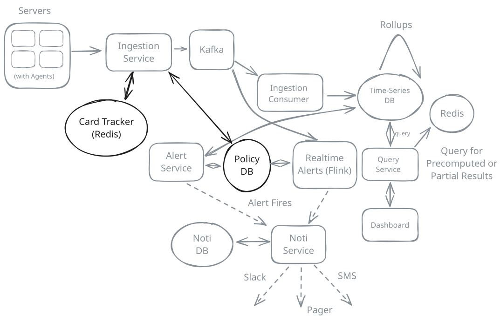
Cardinality Enforcement
The flow looks like:
- Data point arrives at ingestion service
- Strip any label keys not in the allowlist
- Hash the remaining labels to get a series ID
- Check Redis to see if this series already exists
- If new, check against the per-metric series cap
- If under cap, accept and publish to Kafka; if over cap, drop and increment a dropped_metrics counter.
When the cap is hit, the ingestion service fires an alert through our existing notification service so the team knows something is wrong. The dropped metrics counter itself becomes a useful metric to monitor. More monitoring of the monitoring system!
Policies need to be tuned per metric, which requires understanding what your users are actually doing. Too strict and you drop useful data. Too loose and you don't prevent the problem. The Redis lookup also adds latency to the ingestion path (though it's fast, a SET membership check per data point at 5M/s adds up). You could batch these checks or use a local bloom filter as a first pass to reduce Redis round trips.
Here's the final design with all of the components we've discussed:
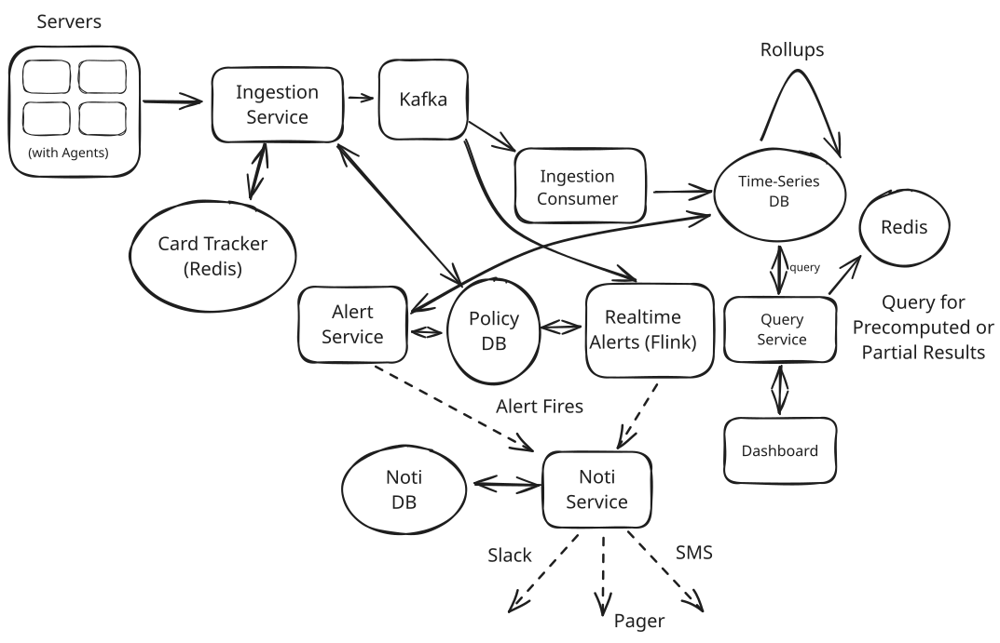
Final Design
What is Expected at Each Level?
Mid-level
Breadth vs. Depth: A mid-level candidate will be mostly focused on breadth (80% vs 20%). You should be able to craft a high-level design that captures the core data flow: ingest -> store -> query -> alert. Many components will be abstractions you understand at a surface level. You probably won't get to topics like cardinality explosion or stream processing.
Probing the Basics: Your interviewer will confirm you understand what each component does. If you mention Kafka, expect questions about why it's useful here (decoupling, durability, parallelism). If you mention a time-series database, be ready to explain why it's better than Postgres for this workload.
The Bar for Metrics Monitoring: For this question, I expect a mid-level candidate to identify the need for a message queue to handle ingestion scale, propose some form of time-series storage, and have a basic understanding of how alerts could work (even if it's just "poll the database"). They may not proactively identify cardinality as a concern but should be able to discuss it when prompted.
Senior
Depth of Expertise: As a senior candidate, expectations shift towards more in-depth knowledge — about 60% breadth and 40% depth. You should understand time-series storage trade-offs, be familiar with stream processing concepts, and articulate why certain approaches fail at scale. You've probably used a metrics system before so you'll have some ideas about cardinality problems and ways to solve them.
Advanced System Design: You should be familiar with patterns like windowed stream processing, and the challenges of high-cardinality data. You can discuss specific technologies (Flink, Kafka, InfluxDB) with some depth.
The Bar for Metrics Monitoring: For this question, a senior candidate should proactively identify cardinality as a critical challenge and propose controls. They should understand why stream processing is better than polling for alerts. They should discuss rollups and retention for query performance. They may not cover all deep dives but should demonstrate clear thinking about 2-3 of the core challenges.
Staff+
Emphasis on Depth: As a staff+ candidate, the expectation is deep expertise — about 40% breadth and 60% depth. You should be able to discuss the operational challenges: meta-monitoring, backpressure cascades, alert fatigue, and multi-tenancy isolation. Interviewers will expect you to be able to go deep into the performance issues inherent to this problem as well as fault tolerance and availability concerns that are lingering.
High Degree of Proactivity: You should drive the conversation, identifying challenges before being prompted. You might discuss trade-offs between Prometheus-style pull vs. Datadog-style push collection models, or dive into histogram aggregation challenges for percentile metrics.
The Bar for Metrics Monitoring: For a staff+ candidate, I expect you to have opinions about technology choices backed by experience. You should discuss production concerns like what happens when the monitoring system itself fails, how to handle schema changes, or how to migrate between storage backends. You demonstrate judgment about what to optimize and what to defer.
Test Your Knowledge
Answer the question below to find your gaps.
Question 1 of 15
If 500k servers each emit 100 metric data points every 10 seconds, what is the peak ingestion rate?
1
500k metrics/second
2
5M metrics/second
3
50M metrics/second
4
500M metrics/second